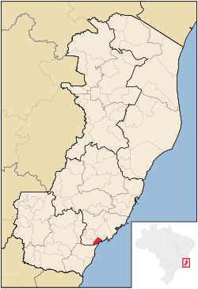

Piúma ES

Piúma é um município brasileiro no litoral sul do estado do Espírito Santo, Região Sudeste do país. Localiza-se a sul da capital do estado
Estátisticas
Ocupa uma área de 74,822 km², sendo que 2,9 km² estão em perímetro urbano, e sua população em 2022 era de 22 300 habitantes.

mapa de Piuma